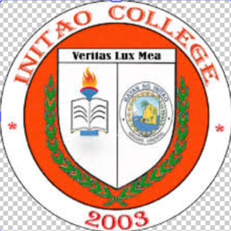
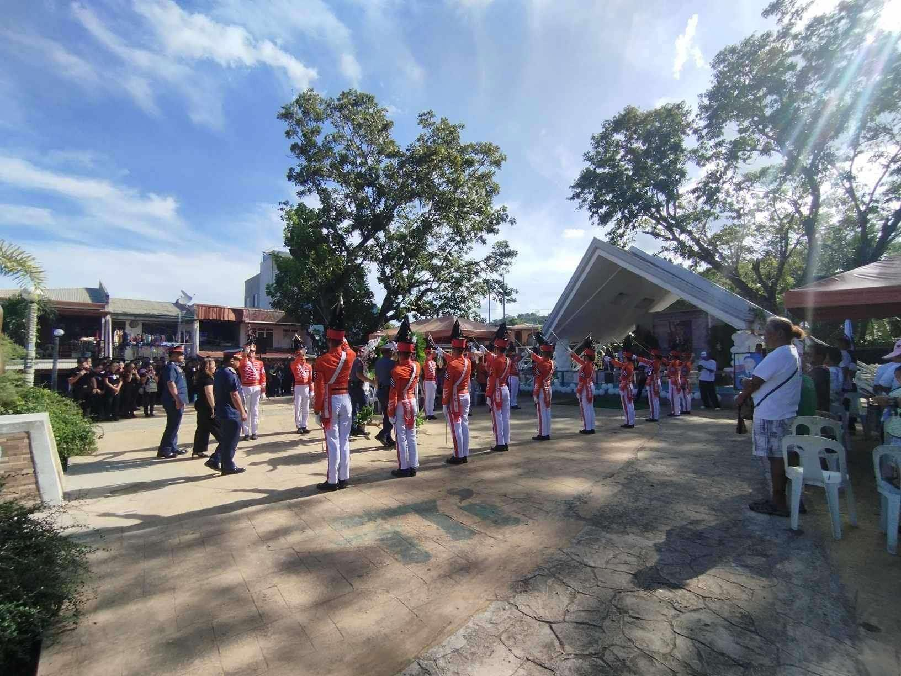
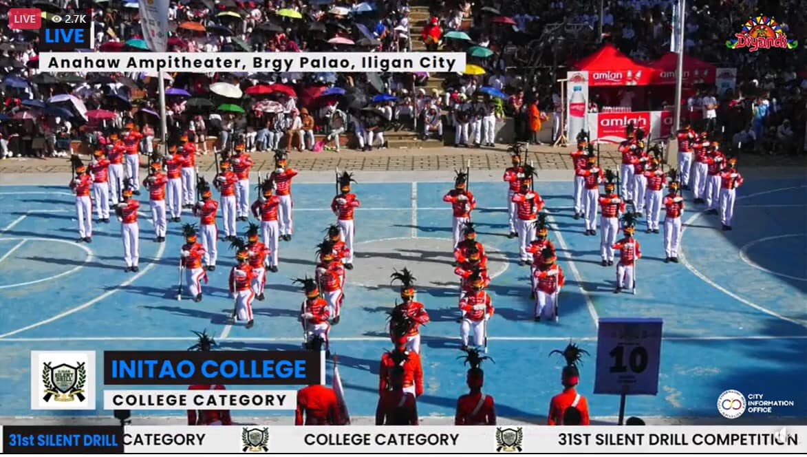

INITAO COLLEGE
Common Events and Activities


Initao College (I.C.), formerly known as Initao Community College, was established in 2003... Initao College (I.C.), formerly known as Initao Community College, was established in 2003 as an LGU of Initao-run higher education institution to provide residents of the municipality access to higher education, preparing students with the competencies necessary in both the local and global industries. Currently, Initao College offers CHED-recognized undergraduate programs in Business Administration, Hospitality Management, Elementary Education, and more recently, BS. Criminology. Since 2018, I.C. is one of the country's implementing schools under the Universal Access to Quality Tertiary Education Act.